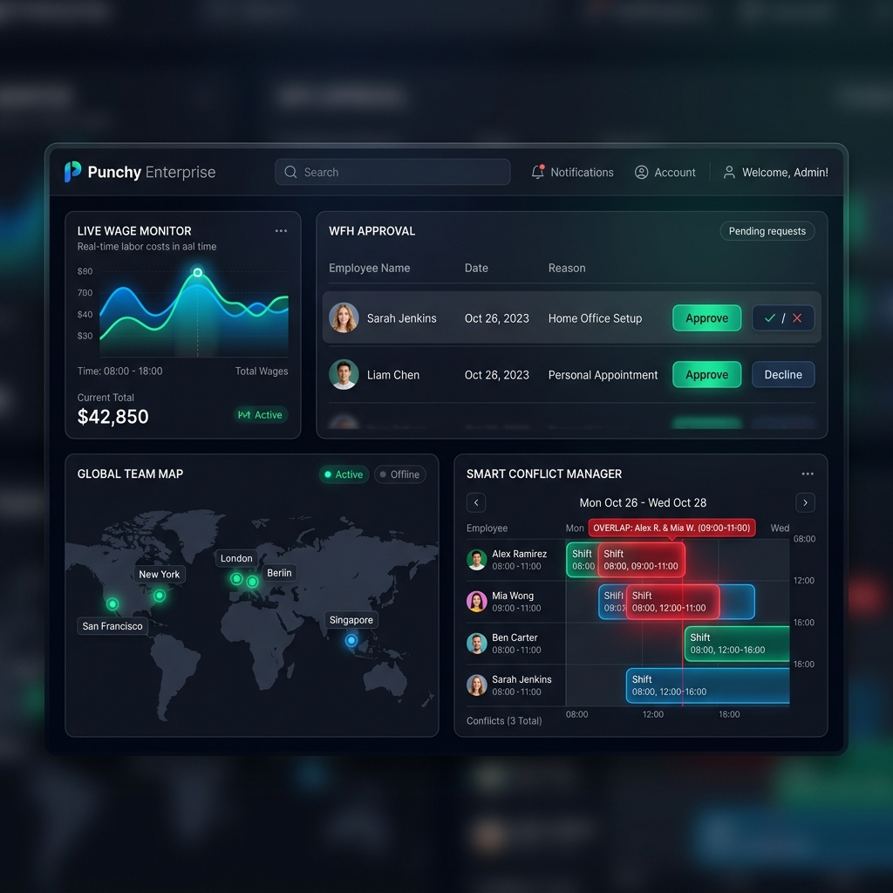

Punchy runs the day-to-day of a multi-location business: shift scheduling, QR and biometric clock-in, real attendance accountability (not just a punch clock), leave and remote-work requests, and Canadian payroll - with a dedicated experience for every role in your company, from the owner down to the person clocking in at the door.

Punchy isn't one generic screen for everyone. Admins, Managers, Accounting staff, and Employees each get exactly the tools their role needs, scoped to exactly the locations they're assigned to - nothing more, nothing hidden behind an upsell.
Full company control - every location, every staff member, schedule creation and photo-import, billing, and audit trail.
Learn More →Scoped to assigned locations - build shifts, approve leave and WFH, submit payroll, and review missed clock-outs for their team.
Learn More →Invited by an Admin with configurable permissions - cross-check and approve payroll, generate paystubs, access encrypted payroll IDs.
Learn More →See their schedule, clock in with a QR scan or Face ID, apply for leave or WFH, view paystubs, and report a missed clock-out themselves.
Learn More →Every business location has its own hours, holiday closures, and vacation-pay policy - Managers and Accounting only see what they're assigned to.
Learn More →A shared tablet at the door becomes a clock-in terminal - QR-paired to your company, remotely enable/disable, no per-employee hardware.
Learn More →Automatic gross pay, statutory deductions, and vacation pay from real clock data - a manager-submit, accounting-approve review chain.
Learn More →Punchy compares every clock-in and clock-out against the actual scheduled shift, so early arrivals, late arrivals, early departures, and late departures are surfaced automatically instead of buried in a spreadsheet nobody reads until payroll day.
Staff apply for leave or work-from-home right in the app. Every request is automatically checked against existing shifts and other approved time off before a Manager ever sees it, so nobody ends up accidentally double-booked or short-staffed on the same day.
Nobody re-types hours into a spreadsheet. Every clock-in, break, and clock-out already recorded in Punchy feeds straight into a two-person review chain before a single paystub is generated.
Sign up as Admin and add your first business location - hours, holidays, and vacation-pay policy included.
Add employees directly, or invite Managers and Accounting staff scoped to specific locations and permissions.
Scan a QR code to turn a shared tablet into a clock-in terminal at the door - no extra hardware to buy.
Let clock data drive the numbers, submit for review, and generate paystubs automatically.